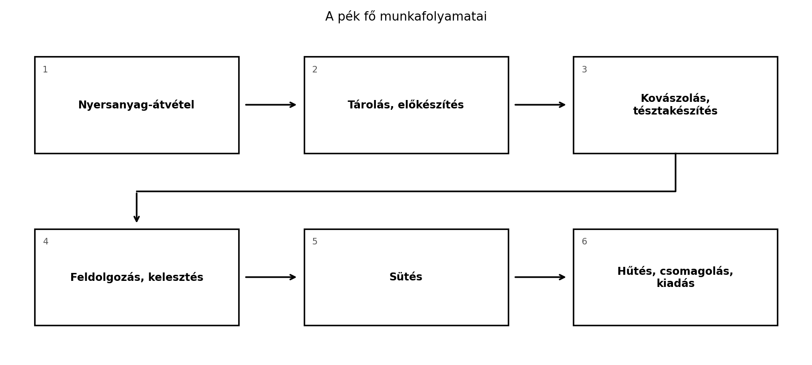
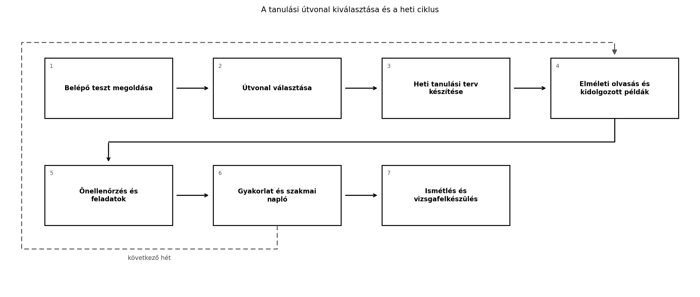

Az első munkanapodon hajnali négykor az üzemvezető átadja a feladatlistát: ma búzakenyeret, tejes zsemlét, kakaós csigát és egy adag brióst kell készíteni. A lisztszállítmányt is át kell venni, a kemence pedig az indulásnál még csak melegszik. Ahhoz, hogy ne csak egy-egy mozdulatot tanulj meg, hanem azt is lásd, mi miért történik, először át kell tekintened a pék szakma egész folyamatát, a tananyag felépítését és azt, hogyan épül fel ez a tankönyv. Ez az alfejezet éppen ezt adja: térképet a szakmához és a könyvhöz.
A pék munkája a nyersanyag-átvételtől a készáru-kiadásig tart. Az alábbi ábra a fő állomásokat mutatja; a későbbi fejezetek mindegyik lépést részletesen, higiéniai és gépbiztonsági szempontokkal együtt dolgozzák fel.

A folyamat nem zárt: a félkész tészták időnként visszakerülnek hűtőbe, a kovász pedig naponta frissítést kap. A fejezet célja, hogy ezt a folyamatot tudd a tananyag fejezeteihez kötni.
Definíció. A pék olyan élelmiszeripari szakember, aki sütőipari termékeket – kenyérféléket, péksüteményeket, finom pékárukat, egyéb sütőipari termékeket és mézeskalács-készítményeket – állít elő, az alapanyagok átvételétől a késztermék hűtéséig, csomagolásáig és kiadásáig. A pék a termékbiztonság (higiénia, HACCP, allergének) és a munkabiztonság szabályait minden munkaműveletben érvényesíti, és a folyamat közben folyamatosan ellenőrzi a tészta, a sütés és a késztermék minőségét.
A kimeneti követelményeket a hatályos képzési és kimeneti követelmény (KKK), valamint a programtanterv (PTT) rögzíti. A Magyarországon jelenleg érvényes szakképzési rendszer – a Szakképzés 4.0 szerinti felépítés – részben eltér a korábbi, 34 541 05 Pék OKJ-kerettantervtől. A tankönyv a kerettanterv tematikáját követi, de a tartalmat a mai pék szakma tudásigényéhez igazítja; a fejezeti hivatkozásoknál mindig a jelenlegi, hatályos KKK/PTT és vizsgaleírás ellenőrzése szükséges. (ellenőrizendő: a hatályos pék szakma KKK és PTT szerinti tantárgy- és témakörlistája, valamint a vizsgakövetelmények)
A kerettanterv nagyobb tantárgyi csoportjai jellemzően a következő területeket fedik le:
A könyv ezt a tematikát tizenkét részre bontja, és minden részben alfejezetekre tagolva tárgyalja a tananyagot. Az alábbi táblázat a részeket és a hozzájuk tartozó fő témákat foglalja össze.
| Rész | Cím | Főbb témakörök |
|---|---|---|
| I. | Útmutató, munkavédelem és gépbiztonság | használat, MVT, tűz, villamos biztonság, gépek |
| II. | Élelmiszer-higiénia, HACCP, allergének | mikrobiológia, tisztítás, élelmiszerjog, minőség, jelölés |
| III. | Alapszámítások, laboratórium, mérések | mértékegységek, arányosság, százalék, laboratóriumi mérések |
| IV. | Sütőipari nyersanyagok | liszt, víz, élesztő, só, segédanyagok, járulékos anyagok, tárolás |
| V. | Műszaki alapok, nyersanyag-előkészítés gépei | géprajz, gépelemek, liszttárolás, adagolás |
| VI. | Kovászolás és tésztakészítés | kovászérlelés, dagasztás, tésztakészítő gépek, anyagnormák |
| VII. | Tésztafeldolgozás és kelesztés | osztás, feladási tömeg, alakítás, kelesztőberendezések |
| VIII. | Sütés, kemencék, késztermékkezelés | sütés elmélete, kemencék, gyakorlat, hűtés, csomagolás |
| IX. | Termékcsoportok gyártástechnológiája | kenyérfélék, péksütemények, finom pékáruk, egyéb termékek |
| X. | Mézeskalács-készítés | mézeskalács alapjai, tészta, feldolgozás, sütés, díszítés |
| XI. | Sütőipari minőségvizsgálat | mennyiségi meghatározások, érzékszervi minősítés, tömegellenőrzés |
| XII. | Üzem, gazdálkodás, vállalkozás, pályakezdés | üzemszervezés, kapacitás, önköltség, marketing, munkavállalás, vizsga |
A táblázat mutatja, hogy a pék szakma minden munkafolyamata legalább egy fejezetben részletesen visszaköszön. Ha például a kenyérhéj színével van gond, a Sütés elmélete vagy a Kenyérfélék fejezetben keresheted az okot.
A könyv minden alfejezete ugyanazt a tanítási rendet követi, hogy az önálló tanulás kiszámítható legyen. Az alfejezetek felépítése általában a következő:
Ez a szerkezet segíti a fokozatos tanulást: előbb megérted, miért kell a tudás, majd képpel és példával megalapozod, végül saját feladatokkal ellenőrzöd magad.
A könyvben minden fontos fogalom, szabály, biztonsági előírás és gyakorlati tanács kiemelést kap. A kiemelések jelentése:
A jelölési konvenciók:
Továbbvitt eredmény. Ez a tanulási szerződés és a kiemelések rendszere minden további alfejezet alapja. A Tanulási útvonalak, vizsga és önellenőrzés alfejezet erre építve mutatja meg, hogyan tervezd a tanulási utat, és hogyan készülj a vizsgára.
Egy frissen végzett pék tanuló első hetében azt kapta feladatul, hogy vegye át a lisztes kamiont, és ellenőrizze a szállítólevelet. A munkatársa megkérdezte tőle: „Melyik fejezetben tanultad, mi a teendő, ha a liszt zsák hőmérséklete magas, vagy ha a szállítólevél és a tétel kódja nem egyezik?” A tanuló nem emlékezett pontosan, de a könyv tematikus felépítése segített: a Nyersanyagok átvétele, tárolása és előkészítése fejezetben megtalálta az átvételi lépéseket, a HACCP-vel kapcsolatos ellenőrzéseket és a dokumentációs mintákat. A tanulság: a tankönyv nemcsak tanulásra, hanem üzemi hibakeresésre és feladatellátásra is használható, ha ismered a felépítését.
1. feladat (A). Nevezd meg a pék öt fő termékcsoportját! Írd mindegyik mellé, melyik könyvfejezet tárgyalja.
2. feladat (A). A fenti folyamatábra alapján írd le számozott sorrendben a pék fő munkafolyamatait a nyersanyag-átvételtől az árukiadásig.
3. feladat (B). Keresd ki a könyv tartalomjegyzékéből (a könyvtérkép alapján), melyik alfejezetben tanulod meg a következőket: (a) a feladási tömeg kiszámítását, (b) az allergén keresztszennyezés megelőzését, (c) a rozskenyér készítését, (d) a dagasztógép biztonságos tisztítását. Mindegyikhez írd a fejezet- és alfejezetcímet a könyv jelölési szabálya szerint.
4. feladat (B). Tegyük fel, hogy a tanuló a Tésztahőmérséklet és dagasztóvíz számítása alfejezetet tanulja. Melyik három kiemeléstípusra számít a szövegben, és miért? Indokold a tanulási szerződés alapján.
5. feladat (C). A könyv szerkezete szerint minden technológiai alfejezetben meg kell jelenni a higiénia–technológia–minőség hármasnak. Válassz egy terméket, például a vizes zsemlét, és írd le, hogyan jelenik meg ez a hármas a Péksütemények fejezetben. Melyik kiemelés hordozza az egyes elemeket?
6. feladat (D). Készíts saját tanulási tervet a könyv használatára: sorold fel, melyik nap melyik részt tanulod, és minden részhez írj egy ellenőrző kérdést vagy feladatot, amelyet el kell tudnod végezni a továbbhaladáshoz. A tervben jelöld, hogy a Tanulási útvonalak, vizsga és önellenőrzés alfejezetet mikor használod.
Önellenőrzés – válaszok
Feladatok – megoldások
A pék szakma a nyersanyag-átvételtől a késztermék kiadásáig tartó folyamatot öleli fel, termékcsoportjai: kenyérfélék, péksütemények, finom pékáruk, egyéb sütőipari termékek, mézeskalács. A tananyag a 34 541 05 Pék OKJ-kerettanterv tematikáját követi, a tartalmat a mai pék szakma tudásigényéhez igazítva; a hatályos képzési és kimeneti követelménytől (KKK) és programtantervtől (PTT) való eltéréseket mindig ellenőrizni kell (ellenőrizendő: hatályos KKK/PTT). A tankönyv tizenkét részből áll, és minden alfejezet azonos tanítási szerkezetet követ: motiváció, szemléletes kép, definíciók, technológia vagy eljárás, kidolgozott példák, valós alkalmazás, gyakorlati útmutató/technológiai lap, minőségellenőrzés, tipikus hibák, önellenőrzés, feladatok, megoldások, összefoglaló. A kiemelések – Definíció., Szabály., HACCP., Allergén., Gépbiztonság., Tilos. stb. – a termékbiztonság és munkabiztonság gyors felismerését segítik. A lisztre vetített százalékban a liszt , és minden mennyiségi adatnál ki kell írni a mértékegységet. A könyv használatakor a „(ellenőrizendő: …)” jelölések mindig a hatályos előírás ellenőrzésére figyelmeztetnek. Továbbvitt eredmény: a tanulási szerződés és a kiemelések rendszere minden további alfejezet alapja; a következő, Tanulási útvonalak, vizsga és önellenőrzés alfejezet erre építve segít a tanulási terv és a vizsgafelkészülés megszervezésében.
A vizsgára vagy a munkahelyi betanulásra készülő pék leggyakoribb hibája az, hogy azonnal a receptek és a termékek felé fordul, miközben nem tudja, mennyit tud a számításokból, nem tervezi be a heti gyakorlást, és nincs rendszere, amelyből a vizsga előtt egy hónappal gyorsan át tud ismételni. Ez a fejezet abban segít, hogy a könyvet ne csak olvasd, hanem saját tanulási rendszert építs: felméred a kiinduló szintedet, kiválasztod a célodhoz illő útvonalat, heti tervet készítesz, és vezeted a szakmai naplódat. Így a tanulás nem esetleges olvasgatás lesz, hanem a pékségi munkához hasonló, ellenőrizhető folyamat.
Képzeld el a tanulást úgy, mint egy műszakbeosztást: a kiinduló szinted a nyitás, a heti terv a napi munkafolyamat, a vizsga pedig a hajnali átadás-átvétel. Az alább látható útvonal- és tervábrák ezt a sorrendet mutatják: honnan indulsz, melyik úton haladsz, és mikor ellenőrzöd magad.
A könyv abból indul ki, hogy az általános iskolai matematika alapjaira szükséged lesz: alapműveletek, törtek, tizedestörtek, százalék, egyenes arányosság, mértékegység-átváltás. A kémiai és biológiai előismeret nem szükséges, de a sütőipari szakszavakat fokozatosan kell megszokni. A belépő teszt célja nem az osztályzás, hanem az, hogy lásd, melyik útvonalon indulj.
Készíts magadnak egy rövid, írásbeli tesztet a következő területekről:
Ha ebből a legtöbb nem megy, akkor először a III. rész: Alapszámítások, laboratórium és mérések alfejezeteit dolgozd fel alaposan. Ha a számolás megy, de a szakmai fogalmak bizonytalanok, a könyv A könyv használata és a pék szakma követelménytérképe alfejezetben bemutatott követelménytérkép alapján ugorhatsz az egyes részekre. A tesztet ne egyszer, hanem három-négy hetente ismételd meg, és írd a naplódba, mit fejlesztettél.
A célodtól függően más-más sorrendet érdemes választanod.
Ez az útvonal azoknak való, akiknek nincs sütőipari gyakorlatuk, vagy akik iskolarendszerű/felnőttképzésben most kezdik a szakmát. A sorrendet a I., II., III., IV., V., VI., VII., VIII., IX., X., XI., XII. rész adja. Kezdd a munkavédelemmel és a higiéniával, mert a gyakorlati termékkészítés ezek nélkül nem biztonságos. A III. rész szakmai számításait a nyersanyag- és technológiai részek előtt dolgozd fel, mert a későbbi receptúrák és technológiai lapok ezekre építenek. Ne ugorj azonnal a kenyér- és péksütemény-technológiára, mert a hibaokok megértéséhez kell a nyersanyagismeret és a technológiai alap.
Ha tanpékségbe jársz, vagy pékségben dolgozol betanítottként, akkor az elméletet mindig az aznapi gyakorlathoz kapcsold. A műszak után keress rá arra a termékre, gépre vagy hibára, amit láttál. Ha reggel vizes zsemlét készítettetek, olvasd el a Péksütemények feldolgozása, kelesztése és sütése a gyakorlatban alfejezetet, és írd be a naplóba a saját paramétereket. Ha a dagasztó gép leállt, vedd elő a Dagasztógépek biztonságos üzemeltetése, gépápolás és folytonos tésztakészítés részt. Így a munkahelyi tapasztalat és a tankönyv egymást magyarázza.
Ha már a szakmai gyakorlat nagy részét ismered, akkor használd a Vizsgafelkészülés fejezetet vezérfonalként. Nézd meg a vizsga felépítését, oldd meg az írásbeli számítási mintafeladatokat, aztán menj vissza azokhoz a részekhez, ahol hibáztál. A gyakorlati vizsgára a termékcsoportok technológiai lapjait gyűjtsd ki: kenyerek, péksütemények, finom pékáruk, mézeskalács. Minden tételnél kérdezd meg: tudom-e a receptúrát lisztre vetítve, a tésztahőmérsékletet, a kelesztési és sütési paramétereket, az allergén- és HACCP-pontokat?

Az ábra azt mutatja be, hogyan halad a tanuló a belépő szint felmérésétől a vizsgáig. A lépések nem zárt, egyszeri sorrendet alkotnak: a „Gyakorlat és szakmai napló” visszahat a következő heti elméleti olvasásra. Ez a visszacsatolás a kulcsa annak, hogy a könyv ne csak elolvasott, hanem használható tudássá váljon.
A heti terv legyen rövid, reális és ellenőrizhető. A túl nagy célok („ezen a héten megtanulom az egész sütőipart”) csak frusztrációt okoznak. Inkább válassz hetente egy vagy két témát, és azokhoz kapcsolj számítást, gyakorlatot és naplóbejegyzést.
Ez az eljárás nem vizsgakövetelmény, hanem a könyv használatának javasolt rendje. A Gyakorlás otthon és a tanpékségben biztonságosan alfejezet azt is megmondja, mit szabad otthon kipróbálni, és mi az, ami csak tanpékségben, felügyelet mellett végezhető.
A szakmai napló a te saját gyártási, tanulási és hibakeresési naplód. Nem az iskolai adminisztrációt akarja helyettesíteni, hanem azt teszi láthatóvá, amit a pékségben tapasztaltál. A füzetben vagy táblázatban érdemes rögzíteni:
A technológiai lapok gyűjteménye pedig az a mappa, amelybe a tanult termékek receptúráit és műveleti paramétereit gyűjtöd. Minden technológiai lap mellé írd oda: „ellenőrizendő: üzemi technológiai lap/gyártói adatlap”. Ez segít abban, hogy a vizsgán ne keverd össze a tanulási példát a kötelező üzemi előírással.
A vizsgáról szóló minden állításnál a hatályos képzési és kimeneti követelményt (KKK) és programtantervet kell alapul venni. Az alábbiak ezért csak tanulási keret, nem jogi leírás: ellenőrizendő: hatályos KKK/PTT és vizsgaleírás.
A pék szakmai vizsga jellemzően három fő területre bontható:
A vizsgafelkészítő útvonalat használva minden gyakorlati terméket úgy tanulj meg, mintha vizsgát tennél: a technológiai lapot előre elkészíted, a munkaterületet átnézed, a gépeket ellenőrzöd, és a kész terméket magad is pontozod. A részleteket a Gyakorlati vizsgafeladat: termékkészítés a technológiai laptól a minősítésig alfejezetnél találod.
Egy felnőttképzésben tanuló pályamódosító élelmiszerboltban dolgozott, de pékségben még soha nem volt. Az első hónapban csak a termékeket nézegette, és úgy érezte, sosem fogja megtanulni a kenyeret. A belépő teszt megmutatta, hogy a százalékszámítás rendben van, de a lisztre vetített százalékot nem érti. A teljes útvonalat választotta, és úgy döntött, hogy heti két alfejezetet dolgoz fel: az egyiket a munkahelyi gyakorlat előtt, a másikat utána. A szakmai naplóba kezdetben csak a dátumot és a termék nevét írta, de a második hónap végén már saját kérdései is voltak: miért lett lapos a zsemle, miért terjedt szét a kenyér. Ahogy a könyvben a hibakereső részekhez ért, rájött, hogy a naplójából visszakeresheti a hibás tészta hőmérsékletét vagy kelesztési idejét. A vizsga előtti ismétléskor már nem kellett újra mindent elolvasnia, elég volt a naplóba írt hibákat és javításokat átnézni.
1. feladat (A) Készíts magadnak egy belépő tesztet négy elemből: egy százalékszámítás, egy mértékegység-átváltás, egy szakmai fogalom és egy arányossági feladat. Oldd is meg. (A válaszban a megoldást is add meg.)
2. feladat (A) Írd le a három tanulási útvonalat egy-egy mondatban, és jelöld meg, melyik illik hozzád.
3. feladat (B) Készíts heti tanulási tervet a következő célra: „Megtanulom a lisztre vetített százalékot és a receptúra-átméretezést.” Tervezd be az elméletet, az önellenőrzést, a feladatokat és a naplóbejegyzést a hét napjaira.
4. feladat (B) Nyiss egy üres szakmai naplót, és készíts fejlécet a következő oszlopokkal: dátum, termék, tétel, tésztahőmérséklet, kelesztési idő, sütési hőmérséklet, hiba, javítás. Tölts ki egy minta sort egy vizes zsemle készítéséről tanulási példaként.
5. feladat (C) Egy tanuló a vizsgafelkészítő útvonalat választja, de a szakmai naplója üres, a feladatokat nem oldja meg, és a technológiai lapokat nem gyűjti. Milyen hibákat fog elkövetni a gyakorlati vizsgán? Miért? Adj neki három konkrét javaslatot.
6. feladat (D) Képzeld el, hogy a heti terv szerint csütörtökön gyakorlati sütésed van. Írd le lépésenként, mit teszel a gyakorlat előtt, közben és után a biztonság és a napló szempontjából. Hivatkozz a Gyakorlás otthon és a tanpékségben biztonságosan alfejezetre.
Önellenőrzés – válaszok
Belépő teszt – válaszok
1. feladat (A) megoldása
Példa belépő teszt és megoldása:
2. feladat (A) megoldása
Teljes útvonal: nulláról, a könyv szerkezeti sorrendjében haladva, gyakorlat nélküli tanulóknak. Kiegészítő útvonal: iskolai órák vagy munka mellé, az aznapi gyakorlathoz kapcsolt elmélettel. Vizsgafelkészítő útvonal: a gyakorlott tanulóknak, a vizsga követelményeiből visszafelé haladva.
3. feladat (B) megoldása
Egy lehetséges heti terv:
4. feladat (B) megoldása
Példa sor a naplóban: Dátum: mai dátum; Termék: vizes zsemle; Tétel: 20 db; Tésztahőmérséklet: 27 °C (tanulási példa); Kelesztési idő: 50 perc; Sütési hőmérséklet: 230 °C (tanulási példa); Hiba: a zsemle héja túl vastag (lehetséges okok: hosszú sütési idő, alacsony kemencehőmérséklet, kevés gőz); Javítás: a sütési idő rövidítése, megfelelő gőzölés a bevetéskor (ellenőrizendő: üzemi technológiai lap).
5. feladat (C) megoldása
A tanuló a gyakorlati vizsgán nem fogja tudni a termék hibáit a saját tapasztalataihoz kötni. A napló hiánya miatt nem látja a paraméterek és a minőség közötti összefüggést. A feladatok megoldásának hiánya miatt a számítási feladatot lassan vagy hibásan végzi el. A technológiai lapok hiánya miatt a vizsgán kapkod, és esetleg rossz tésztahőmérsékletet vagy sütési időt választ. Javaslatok: vezessen naplót minden gyakorlat után; oldjon meg hetente legalább két számítási feladatot; készítsen saját technológiailap-gyűjteményt, és azt használja a gyakorlati vizsga előtt.
6. feladat (D) megoldása
Gyakorlat előtt: egyeztesd a technológiai lapot, ellenőrizd a munkaruha, hajháló, ékszer nélküli megjelenést, nézd meg a munkaterület tisztaságát, és ha gépet használsz, végezd el az üzem előtti szemlét, vészleállító tesztet. Gyakorlat közben: tartsd be az adagolást és a paramétereket, jegyezd meg a tésztahőmérsékletet, a kelesztési időt, a sütési hőmérsékletet és a késztermék tömegét. Gyakorlat után: takaríts, ellenőrizd a gépek leállítását, töltsd ki a naplót, és jelöld a HACCP-pontokat. A biztonságos otthoni gyakorlás kereteiről a Gyakorlás otthon és a tanpékségben biztonságosan alfejezet ad eligazítást.
A tanuláshoz rendszer kell, nem csak szorgalom. Először egy rövid belépő teszttel mérd fel, hogy az alapszámítások, a mértékegységek és a szakmai fogalmak közül mit tudsz. Ezután válaszd ki a három útvonal egyikét: a teljes útvonalat nulláról kezdőknek, a kiegészítőt munka vagy iskolai órák mellé, a vizsgafelkészítőt gyakorlott tanulóknak. Minden héten készíts tervet: jelöld ki a célt, az elméletet, az önellenőrzést, a feladatokat és a gyakorlatot. A szakmai naplóba írd be a termékeket, paramétereket, higiéniai és gépellenőrzési észrevételeket, hibákat és javításokat. A technológiai lapokat gyűjtsd külön, és mindegyikhez írd oda az ellenőrzési igényt. A vizsga szerkezetét a hatályos KKK/PTT és vizsgaleírás szerint mindig ellenőrizd. Ezt a naplót és lapgyűjteményt használjuk később a gyakorlati útmutatóknál és a Gyakorlati vizsgafeladat: termékkészítés a technológiai laptól a minősítésig alfejezetnél; a biztonságos otthoni gyakorlás kereteit a Gyakorlás otthon és a tanpékségben biztonságosan alfejezet adja.
A tanuló pék első gyakorlati órája előtt a tanpékségben vagy az otthoni konyhában gyakran felteszi a kérdést: „Mit csinálhatok egyedül, és mit csak felügyelettel?”. Ha ezt a határt félreérti, az egyik oldalon biztonsági kockázatot vállal (például engedély nélkül elindít egy ipari dagasztógépet), a másikon pedig elmulasztja a tanulási lehetőséget (csak nézi a kemencét, de nem méri a maghőmérsékletet). Ebben az alfejezetben összeállítjuk a gyakorláshoz való eszközkészletet, megmutatjuk az otthoni sütő és az ipari kemence közötti különbségeket, és pontosan kimondjuk a biztonságos gyakorlás határait. A cél az, hogy a tanuló minden gyakorlati feladatot önállóan elő tudjon készíteni, de a veszélyes gépekhez csak a megfelelő betanítás és felügyelet után nyúljon.
A gyakorlás szintjeit egy egyszerű döntés választja szét: először azt kell eldönteni, hogy a művelethez kézi erő és otthoni sütő elegendő-e, vagy ipari gépre van szükség. A kézi dagasztás, a kelesztés és a kisméretű sütés otthon is gyakorolható, de az ipari dagasztó-, osztó- és formázógép kezelése már a tanpékségben, oktatói felügyelettel történik.
A döntés egyetlen kérdésen múlik: kell-e a művelethez ipari gép, forró zsiradék vagy ipari kemence?
| A döntő kérdésre adott válasz | Hol gyakorolhatsz? | Példák a műveletekre |
|---|---|---|
| Nem – kézi erő és otthoni sütő elég | Otthon, önállóan | kézi dagasztás, gömbölyítés, formázás, kelesztés, kisméretű sütés otthoni sütőben |
| Igen – ipari gép, forró zsiradék vagy ipari kemence kell | Tanpékségben, betanítás után, oktatói felügyelettel | gépi dagasztás, osztás, gépi formázás, ipari kemence, fánksütő |
Mindkét helyszínen azonos a higiéniai alap: személyi higiénia, allergén-elkülönítés, a romlandó anyagok hűtése. A táblázat tájékoztató: a konkrét határt mindig az oktató és a tanpékség szabályzata jelöli ki.
A táblázatból látható, hogy a biztonságos gyakorlás nem egyszerűen „otthon vagy tanpékségben” választás, hanem az adott művelet kockázata dönti el, hogy melyik környezetben szabad elvégezni. A kézi dagasztás otthon kisebb kockázattal jár, mint egy hajnali műszakban egy ipari tésztakészítő gép beindítása.
Definíció. Otthoni gyakorlókészletnek nevezzük azoknak az egyszerű, kézi eszközöknek és mérőeszközöknek az együttesét, amelyek lehetővé teszik a pék szakmai fogásainak kis méretben, családi konyhai körülmények között történő gyakorlását anélkül, hogy ipari gépeket használnánk.
Szabály. A gyakorlás biztonsági határa azt a pontot jelöli, ameddig a tanuló saját felelősségére, önállóan dolgozhat; ezen túl csak betanítás után, az oktató vagy a kijelölt szakember felügyeletével végezhet műveletet.
Továbbvitt eredmény. A gyakorlás biztonsági határa minden későbbi gyakorlati útmutató alapja: a tésztakészítés, a gépi dagasztás, a sütés, a mézeskalács-készítés és a vizsgagyakorlat során mindig ezt a határt kell ellenőrizni. Az itt kialakított biztonsági szemlélet a Munkavédelem és tűzvédelem fejezethez is kapcsolódik (munkakörnyezeti hatások, baleset, tűz), a gépek biztonságos üzemeltetését pedig a Villamos biztonság és gépbiztonság fejezet részletezi.
Az otthoni gyakorláshoz nincs szükség drága gépekre. A következő eszközök elegendők a legtöbb kézi fogás – dagasztás, gömbölyítés, hosszformázás, fonás, sütés – elsajátításához:
| Eszköz | Jellemző | Mihez kell |
|---|---|---|
| Digitális konyhai mérleg | 1 g-os osztás, legalább 5 kg-ig | Tészták, hozzávalók pontos mérése |
| Finom mérleg | 0,1 g-os osztás | Só, élesztő, adalékok, fűszerek kismennyiségű kimérése |
| Maghőmérő | −20 °C és +250 °C között, szonda | Tészta- és bélhőmérséklet, átsültség ellenőrzése |
| Tésztakaparó | Rozsdamentes vagy műanyag lapát | Tészta kiemelése, osztása, dagasztótál tisztítása |
| Szakajtó | Fűz- vagy műanyag kosár, lenvászon kendő | Megformázott kenyerek kelesztése, a jellegzetes mintázat kialakítása |
| Sütőlemez, sütőkő | Sík, teflonos vagy kő | Kenyér és péksütemény sütése otthoni sütőben, hőkiegyenlítés |
A táblázat eszközeit a lenti tabló felülnézetben, közelítő méretarányban mutatja. A két mérleg (1, 2) a kijelző osztásában különbözik: a konyhai mérleg grammra, a finom mérleg tized grammra mér – ezért a sót és az élesztőt kis tételnél a finom mérleggel mérjük. A tésztakaparóból kétféle kell: a hajlékony műanyag (4a) a tál ívét követi, a merev acéllap (4b) oszt és tisztít. A szakajtó alakja (5a kerek, 5b hosszú) a kenyér formáját adja.
Vásárláskor a mérleg osztását és a hőmérő mérési tartományát az eszköz adatlapján ellenőrizd. A HTML-kiadásban az eszközre mutatva megjelenik a táblázat „Jellemző” és „Mihez kell” oszlopa.
Példa. Egy 500 g lisztből készülő búzakenyeret otthoni sütőben süthetünk: a tésztát kézzel dagasztjuk, szakajtóban kelesztjük, majd 230 °C-ra előmelegített sütőben, sütőkövön kb. 35–40 percig sütjük; a sütés végén maghőmérővel ellenőrizzük, hogy a bél elérte-e a legalább 96 °C-ot (tanulási érték, ellenőrizendő) (ellenőrizendő: az adott sütő hőmérséklet-ingadozása és a kenyér alakja szerint). Az ipari kemencéhez képest az otthoni sütő hőmérséklete egyenletlenebb, a gőzölés csak korlátozottan oldható meg (pl. forró vízzel töltött tálca), ezért az otthoni sütés főleg a kézi-feldolgozási fogások gyakorlására alkalmas.
Összefüggés. A receptek kicsinyítésekor az összetevők tömegét ugyanazzal az aránnyal csökkentjük: ha az eredeti recept 10 kg lisztből indul, és mi csak 1 kg lisztet akarunk használni, akkor a kicsinyítési arány , azaz minden összetevő tömegét 0,1-gyel szorozzuk. A lisztre vetített százalékokat nem szabad megváltoztatni; a víz, só, élesztő aránya ugyanaz marad. Ezt az arányos átváltást a Szakmai alapszámítások és a Százalékszámítás és a lisztre vetített (sütőipari) százalék alfejezetekben részletesen gyakoroljuk.
Gépbiztonság. A pék tanuló soha ne kezeljen ipari dagasztógépet, tésztaosztót, nyújtó- vagy szeletelőgépet, ha nem kapott erre külön betanítást és nincs jelen az oktató vagy a gépkezelő. A gépek elindításakor a védőburkolatnak a helyén kell lennie, a vészkapcsolót előzőleg ellenőrizni kell, és a forgó részeket addig nem szabad kézzel megérinteni, amíg teljesen meg nem álltak. A védőrács eltávolítása, a reteszelés áthidalása vagy a gépbe nyúlás futó gép mellett tilos és életveszélyes gyakorlat.
Figyelem. Forró zsiradékkal – például fánksütőben – csak az erre feljogosított személyzet, védőkesztyűben dolgozhat. A forró zsiradékot soha nem szabad magára hagyni, mert túlmelegedéskor meggyulladhat; a zsírtűz oltására víz nem használható. A fánksütő kezelése tanpékségben is csak felügyelettel történik.
Tilos. A lisztport sűrített levegővel lefújni vagy szárazon, felhőt képezve söpörni; a porfelhő közelében nyílt láng, szikrát adó művelet és dohányzás tilos, mert a szálló lisztpor robbanásveszélyes (ellenőrizendő: a pékség tűzvédelmi szabályzata, robbanásvédelmi dokumentáció). A port porszívóval vagy nedves módszerrel takarítjuk. Részletesen: Munkabaleset, elsősegély és tűzvédelem.
Higiénia. Az otthoni gyakorlás nem mentesít az élelmiszer-higiéniai előírások betartása alól. A kézmosás a munka megkezdése előtt és minden szennyező művelet (pl. tojástörés, hulladék kidobása, telefon érintése) után 20–30 másodperces, meleg vizes, szappanos kézmosás. A munkapultot, a mérlegeket, a tésztakaparót és a szakajtót tiszta, lehetőleg élelmiszeripari felületre szánt tisztítószerrel kell letisztítani, majd szükség szerint fertőtleníteni otthoni körülmények között is. Hasmenés, hányás, láz, gennyes vagy fedetlen seb esetén ne készíts mások számára ételt, a tanpékségben jelentsd az oktatónak; az apró sebet vízálló (lehetőleg kék) tapasszal és kesztyűvel fedd.
Allergén. Otthoni gyakorlásnál különösen ügyelni kell arra, hogy a pék tanuló a családban allergiás személy számára ne okozzon keresztszennyeződést. A gluténmentes vagy tojás- és tejmentes kísérletekhez külön eszközöket kell használni, és a sütő rácsát, a tésztakaparót vagy a szakajtót alaposan el kell mosni. Az allergén anyagok címkéjét mindig olvassuk el, és a fűszerek, magvak (szezám, dió) nyomokban is komoly reakciót válthatnak ki. Az otthoni gyakorlás során a „gluténmentes” kijelentés nem tehető, mert a keresztszennyeződés ellenőrzése otthoni körülmények között nem garantálható.
Egy tanuló éjszakai gyakorlaton a tanpékségben az oktató engedélye nélkül akarta átkapcsolni a tésztaosztó gépet, mert úgy gondolta, lassan halad a sor. A gép védőrácsa nyitva volt, és a retesz éppen nem működött. A tanuló keze a mozgó dugattyú közelébe került. Az oktató időben leállította a gépet, és a baleset elmaradt. A tanulság: a betanítás hiánya és a gép állapotának ellenőrzése nélküli beavatkozás súlyos balesethez vezethet; a tanuló csak a saját feladatkörébe tartozó gépeket, az oktató jelenlétében kezelheti.
Cél: A tanuló gyakorló eszközkészletének ellenőrzése, a biztonsági szabályok betartása és a megfelelő környezet kiválasztása.
Eszközök és anyagok: digitális mérleg (1 g), finom mérleg (0,1 g), maghőmérő, tésztakaparó, szakajtó, sütőlemez vagy sütőkő, tiszta konyharuha, meleg víz, szappan, tisztítószer, fertőtlenítő (otthoni használatra alkalmas), receptkönyv vagy technológiai lap.
Higiénia. A munkaterület legyen tiszta, a felületeket fertőtlenítve, a haj rögzítve, karóra és gyűrű nélkül. A kézmosást meleg vízzel, szappannal 20–30 másodpercig végezzük. A gyakorlás alatt ne együnk, ne igyunk, és a nyersanyagokat ne helyezzük a földre.
Gépbiztonság. Otthoni gyakorláshoz gépet nem használunk. Tanpékségben csak az oktató által bemutatott, betanított gépet, felügyelet mellett szabad kezelni; a gép minden védőburkolata a helyén legyen, és a tisztítás, beavatkozás csak áramtalanított, újraindítás ellen biztosított gépen történhet.
1. feladat (A) Sorold fel az otthoni gyakorlókészlet öt alapvető eszközét!
2. feladat (A) Igazak-e az alábbi állítások? Indokold röviden: - A maghőmérő a sütő hőmérsékletének mérésére szolgál. - A lisztre vetített százalék a tészta össztömegére vonatkozik.
3. feladat (B) Egy recept 10 kg lisztet, 6,2 kg vizet, 0,18 kg sót és 0,08 kg élesztőt ír elő. Csökkentsd a mennyiségeket úgy, hogy 1,5 kg lisztet használj fel! Add meg az összes összetevő tömegét gramm pontossággal!
4. feladat (B) Milyen higiéniai és biztonsági lépéseket kell megtenned, mielőtt az otthoni konyhában dagasztani kezdesz? Írd le legalább öt lépésben!
5. feladat (C) A tanpékségben a tésztaosztó gép védőrácsa nyitva marad, és az oktató szól, hogy légy óvatos, mert ma javítás alatt van a reteszelés. Mit teszel? Indokold a veszélyt!
6. feladat (D) Otthoni gyakorlás során egy barátod szerint a fánkot sütni is lehet simán otthon, mert „a forró olaj ugyanolyan, mint a sütő”. Hogyan magyarázod el neki a különbséget a sütőben és a zsírban sütés között, és milyen biztonsági szabályt említesz a forró olaj kezeléséről?
1. feladat (A) Például: digitális konyhai mérleg (1 g), finom mérleg (0,1 g), maghőmérő, tésztakaparó, szakajtó, sütőlemez vagy sütőkő.
2. feladat (A) - Hamis. A maghőmérő a tészta belső hőmérsékletét (pl. kelt tészta, kenyérbél, fánk közepe) méri; a sütő hőmérsékletét külön sütőhőmérővel ellenőrizzük. - Hamis. A lisztre vetített százalék azt mutatja, hogy az egyes összetevők tömege a liszt tömegének hány százaléka, tehát a lisztet vesszük 100%-nak, nem a tészta össztömegét.
3. feladat (B) A kicsinyítési arány . Így: - Liszt: - Víz: - Só: - Élesztő: Ellenőrzés: az összes tömeg , ami a kicsinyített tészta tömege.
4. feladat (B) Legalább öt lépés: 1) tiszta munkaruha felvétele, haj rögzítése, ékszerek levétele; 2) a munkapult, mérleg, tál és eszközök tisztítása, fertőtlenítése; 3) kézmosás meleg vízzel, szappannal 20–30 másodpercig; 4) az alapanyagok ellenőrzése (liszt, víz, élesztő, só frissessége, allergének); 5) a recept átszámítása és az eszközök elrendezése; 6) a hűtő használata tejtermék, tojás számára, ha kell.
5. feladat (C) Nem szabad a gépet használni. A nyitott védőrács és a hibás reteszelés miatt a forgó alkatrészekhez hozzá lehet érni, ami súlyos sérülést okozhat. Jelenteni kell az oktatónak, hogy a gépet nem szabad üzembe helyezni, amíg a védőberendezést meg nem javítják. A munkavédelmi szabályok szerint a védőrács kiiktatása tilos, és a gép csak akkor üzemelhet, ha a reteszelés működik (ellenőrizendő: a hatályos gépbiztonsági előírás).
6. feladat (D) A sütőben a hő átadása elsősorban forró levegővel és a sütőtér falának sugárzásával történik, a termék nem merül forró zsiradékba. A zsírban sütésnél a terméket 160–190 °C-os olajba merítjük, ahol a hőmérséklet szabályozása és a zsiradék minősége kritikus. Az olaj túlhevülésekor füst, bomlástermékek keletkeznek, és a zsiradék meggyulladhat. A forró olajos edényt soha nem hagyjuk felügyelet nélkül, és vizet soha nem öntünk rá; olajsütés tanpékségben, fánksütő géppel vagy erre alkalmas edényzettel, védőkesztyűvel, felügyelettel történik. A barátodnak meg kell magyarázni, hogy a forró olaj égési sérülést és lakástüzet okozhat, ezért otthon csak a sütőben sütött, kevésbé veszélyes terméket gyakoroljon.
A pék tanuló biztonságos gyakorlása két színtéren történik: otthon a kézi dagasztás, kelesztés és kisméretű sütés, a tanpékségben a gépi műveletek, az ipari kemence és a fánksütő használata. Az otthoni gyakorlókészlet alapja a digitális mérleg (1 g), a finom mérleg (0,1 g), a maghőmérő, a tésztakaparó, a szakajtó, a sütőlemez vagy sütőkő. A receptek kicsinyítésekor minden összetevő tömegét ugyanazzal az aránnyal szorozzuk, miközben a lisztre vetített százalék változatlan marad. A gyakorlás biztonsági határa szerint ipari dagasztó-, osztó-, nyújtó- vagy szeletelőgépet a tanuló csak betanítás után, felügyelettel kezelhet; forró zsiradékot pedig soha nem hagyhat felügyelet nélkül. A higiéniai szabályok (kézmosás, allergén-elkülönítés, hűtés) otthon is érvényesek. Ezek az elvek alapozzák meg a későbbi gyakorlati útmutatók és a Munkavédelem és tűzvédelem a sütőüzemben és a Villamos biztonság és gépbiztonság fejezet biztonsági gondolkodásmódját.